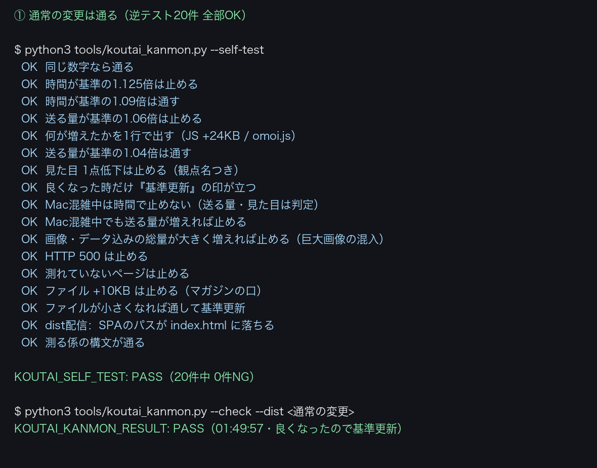
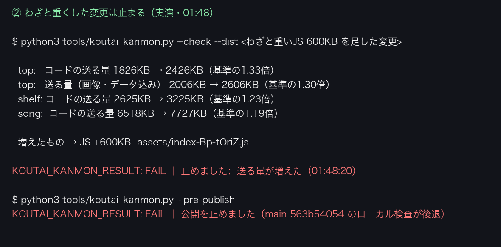
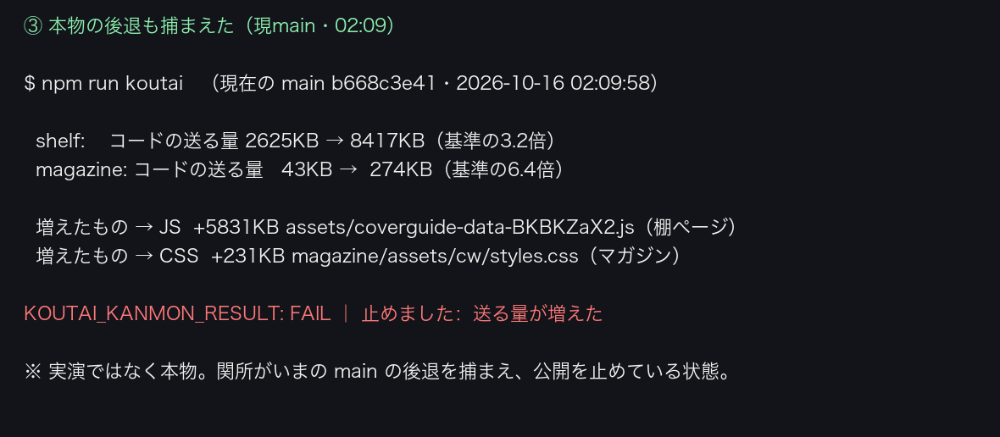

tools/koutai_kanmon.py）。トップ・棚・曲ページ・マガジンの「1ページ目の時間」「送る量（KB）」「見た目の点数」を基準値と比べ、時間が基準の1.1倍超・送る量が1.05倍超・点数が1点でも下がれば止めて、何が増えたかを1行で出します。良くなった時だけ基準値が更新されます。本番リポ（joy-relief-station）には憲法第22条と npm run koutai を入れ、工場では Lovable公開を押す係・公開後に見る係・マガジンを置く口の3か所に組み込みました。わざと重いJS（600KB）を足した変更を実際に止め、さらにいまの main に入った本物の後退（棚ページに約5.8MBのデータ束・マガジンCSS +231KB）も捕まえて公開を止めています。01:32:34 prod FAIL top: 1ページ目 3300ms→3720ms（+13%）／shelf: 1ページ目 2604ms→4144ms（+59%）／song: 1ページ目 2396ms→6136ms（+156%） 01:38:10 local PASS 基準が無かったので今回を基準にした 01:39:44 local PASS Macが混雑（負荷11.0/CPU8）のため時間は参考値・判定から外した 01:41:22 local PASS 基準が無かったので今回を基準にした 01:42:48 local PASS Macが混雑（負荷7.5/CPU8）のため時間は参考値・判定から外した 01:42:49 files PASS - 01:42:50 files FAIL rei-harakami.html 43KB→102KB（+134%） 01:42:50 files PASS - 01:45:40 local PASS Macが混雑（負荷10.1/CPU8）のため時間は参考値・判定から外した 01:48:20 local FAIL top: コードの送る量 1826KB→2426KB（+33%）／top: 送る量（画像・データ込み） 2006KB→2606KB（+30%）／shelf: コードの送る量 2625KB→3225KB（+23%）／song: コードの送る量 6518KB→7727KB（+19%）／Macが混雑（負荷 01:49:57 local PASS Macが混雑（負荷9.1/CPU8）のため時間は参考値・判定から外した 02:09:58 local FAIL shelf: コードの送る量 2625KB→8417KB（+221%）／shelf: 送る量（画像・データ込み） 2637KB→8438KB（+220%）／magazine: コードの送る量 43KB→274KB（+525%）／magazine: 送る量（画像・データ込み） 43KB→274KB（+



| 確認項目 | 結果 |
|---|---|
| 通常の変更（資源は同じ）を通した | PASS（01:49:57・良くなったので基準更新） |
| わざと重いJS（600KB）を足した変更を止めた | FAIL：top コードの送る量 1826KB→2426KB／増えたもの JS +600KB index-Bp-tOriZ.js（01:48:20） |
| 公開押し係の口（--pre-publish）が止めた | FAIL：公開を止めました（main 563b54054 のローカル検査が後退） |
| 戻したら通った・公開口も通った | PASS／PASS（01:49・01:50） |
| マガジンを置く口（--check-files） | 通常 PASS／重いHTML（43KB→102KB）FAIL／戻して PASS |
| 本番リポ main に第22条と npm run koutai が入った | 入っています（main の CLAUDE.md 222〜225行目・package.json scripts.koutai。非公開リポなので中身は下の節に転記） |
| 本物の後退を捕まえた（現main b668c3e41・02:09:58） | FAIL：shelf 2625KB→8417KB（coverguide-data-BKBKZaX2.js +5831KB）／magazine 43KB→274KB（cw/styles.css +231KB）→ 公開を止めている。減らす作業は別案件として受付台帳へ |
| Lovableの公開を押した | 押せていません（Lovableの鍵が『死んでいる』・公開便のChromeも停止中）。鍵が戻れば公開押し係が自動で押し、その直前にこの関所を通る |
| ローカルの vite build（SSR）で測った | 初回はできていません（Macのディスク待ちで9分進まず中止）。実演は本番の写しをローカル配信して行った。02:09 の検査はビルド成果物 .output で測れている |